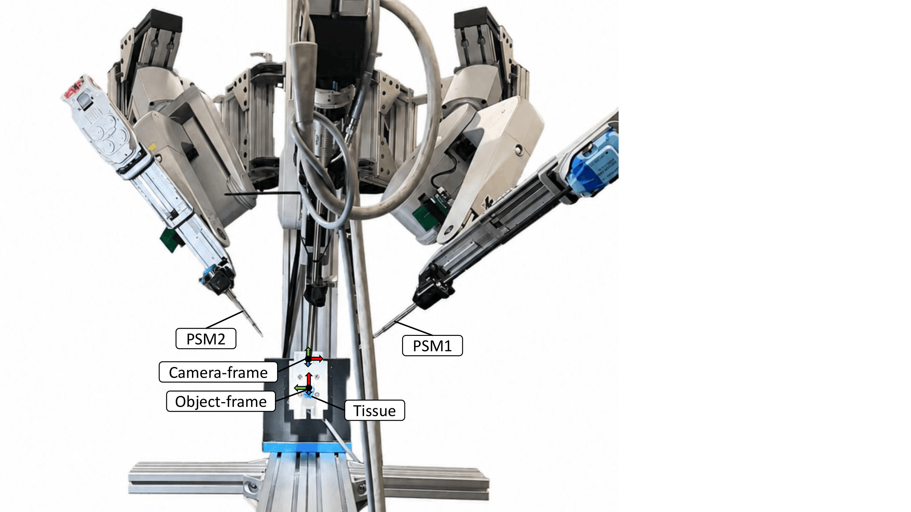

ICRA 2027 (in submission) · IROS 2026 ELSR Workshop · 2026/5–2026/9
Vision-Based 3D Force Estimation
Object-Centered Reconstruction for Vision-Based 3D Force Estimation
arXivThis project estimates 3D tool–tissue interaction force from stereo endoscopic video. It reconstructs the tissue surface, tracks deformation in an object-centered frame, and predicts force from the motion of the tracked points.
Motivation
Surgical robots often lack direct force sensing, while most surgical data are visual. Vision-based force estimation provides a sensorless alternative, but existing methods remain sensitive to tissue pose and camera viewpoint.

Data collection and tissue extraction
We use the dVRK-Si to manipulate tissue while recording stereo endoscopic video and force sensor measurements as ground truth. SAM 2 identifies the tissue region in each frame, and stereo depth converts the segmented region into a 3D point cloud.
Object-centered tracking
We track points on the tissue and express them in the object frame. Although the tissue rotates by about 90 degrees in the camera view, the tracked points keep a consistent orientation in the object frame. This gives the model a consistent geometric representation across scenes.
Force prediction and validation
After tracking the tissue points, we calculate their 3D positions and velocities and use a Set Transformer–LSTM network to predict Fx, Fy, and Fz. In the validation demos, the circle shows force along the camera depth direction and the arrow shows the in-plane force component.